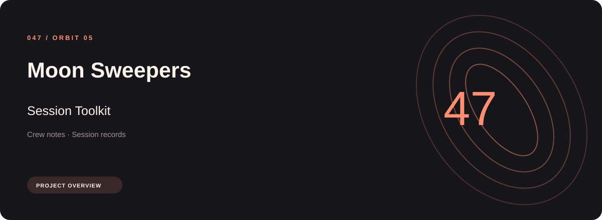

The Moon Sweepers session toolkit workflow separates crew notes from session records and equipment groups. Named sections make the available options easier to find.
Download Moon Sweepers Session Toolkit
Open the project's download page for the application package and its installation information.